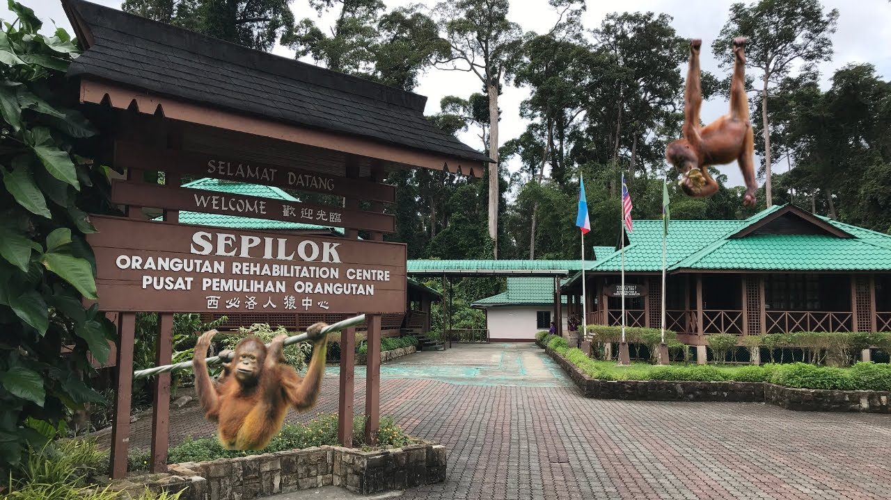

About Sabah
Sabah is a Malaysian state located on the northern portion of Borneo. Known for its stunning natural beauty, diverse culture, and rich biodiversity, Sabah is a popular destination for travelers seeking adventure and unique experiences.
Sabah is a Malaysian state located on the northern portion of Borneo. Known for its stunning natural beauty, diverse culture, and rich biodiversity, Sabah is a popular destination for travelers seeking adventure and unique experiences.
Mount Kinabalu is one of the highest peaks in Southeast Asia and a UNESCO World Heritage site. It's a popular spot for hikers and nature enthusiasts.

This center is dedicated to the rehabilitation of orphaned and injured orangutans. Visitors can see these incredible animals up close and learn about conservation efforts.
This marine park is made up of five islands and offers excellent opportunities for snorkeling, diving, and relaxing on beautiful beaches.

Sabah is home to a diverse mix of indigenous groups, each with its own unique culture and traditions. Visitors can experience traditional music, dance, and festivals that reflect this rich cultural heritage.